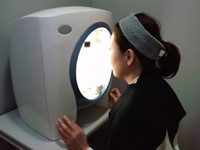
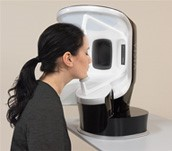
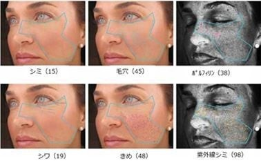
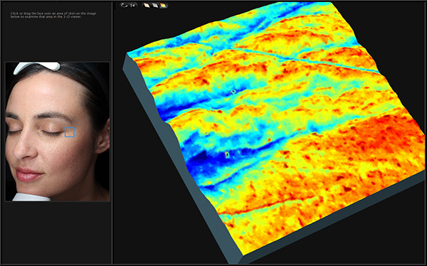
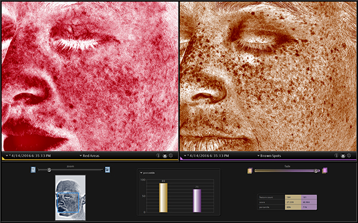
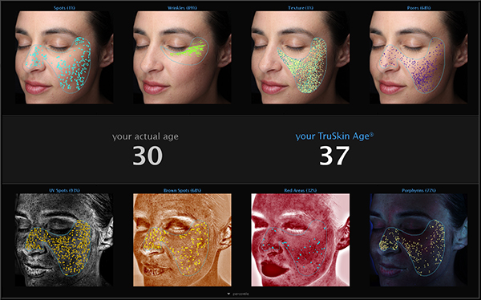
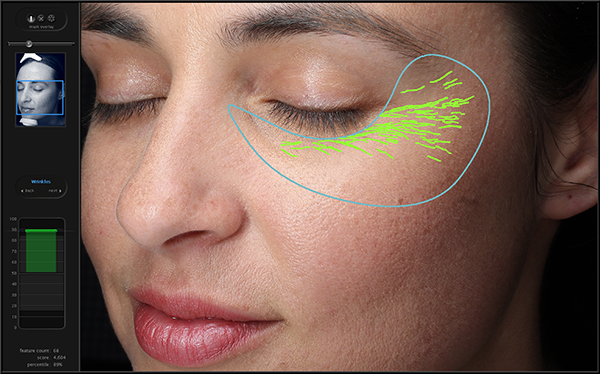

理想の素肌への近道は、
今の自分の肌状態を知ることから始まります。
理想の素肌への近道は、今の自分の肌状態を知ることから始まります。

例えば、紫外線が原因といわれるシミですが一時的な日焼けであればメラニンは消失してシミにはなりませんが、わずかに残ったメラニンがシミになるケースも見られます。また、加齢による代謝の低下もシミの原因になりますが、個人差が大きく早くからシミの出る方もいれば幾つになってもシミひとつない方もおられます。 肌画像診断器ＶＩＳＩＡによる撮影は約１０分。先端のテクノロジーを駆使した特殊なライト撮影とコンピューター分析によって、肉眼では判別しにくい薄いシミ、隠れジミを正確に読み取ります。 浜口皮ふ科形成外科天王寺では、その解析データをもとにシミのタイプ・原因を突き止め、内服薬・外用薬・イオン導入・アクシダーム・ピーリング・フォトＲＦ・Ｑスイッチレーザーなど、それらの組み合わせを含む的確な治療方針の選択をします。
肌診断→肌診断の料金
3000円(肌診断)
※当院初めての方は初診料2,000円が必要です。
肌診断器


ＶＩＳＩＡは高精度のためのダブル写真撮影システム、一台でカラー写真とＵＶ写真の同時撮影が可能です。カラー写真撮影からはシミ・シワ・毛穴・肌の色むらを、ＵＶ写真撮影から隠れジミを高精度で捉えます。
VISIAでチェックできる基本の6つの項目
| シミ | 肌表面の色が部分的に異なる範囲を特定し、シミとして読み取ります。 |
|---|---|
| シワ | 肌表面シワの数を読み取ります。 |
| ポルフィリン | 毛穴のバクテリア、菌の排泄物。ニキビができやすい肌状態かどうかがわかります。 |
| テクスチャー | 肌表面の細かい凹凸を読み取ります。 |
| 毛穴 | ある一定の大きさ以上に開いている毛穴の数を読み取ります。 |
| 紫外線シミ | 肌表面には現れていない潜在的なシミの数を読み取ります。 |

シミ、シワ、毛穴、紫外線による潜在的なシミなど、各項目の発生範囲や個数を読み取り確認します。
■キメの解析
あなたの顔の中心～周辺で、その色を比較。肌表面の凹凸を判断して、滑らかさを解析します。

■皮膚の色の解析
赤ら顔・ニキビ・色素沈着治療のために、メラニン・ヘモグロビンなど肌の色を決定する主な要素を分離し別々に画像化。

■肌年齢の解析
同性、同年齢の肌状態の平均値は、日本人肌約1万人以上のデータベースから 同年代の平均値と自分の解析結果を比較することができます。

■シワの解析
肌表面のシワの数を読み取ります。
